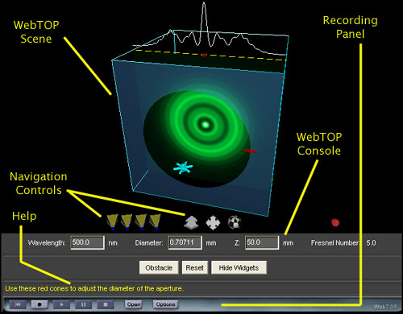
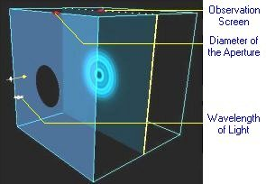
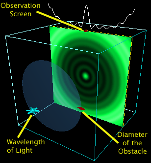
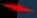
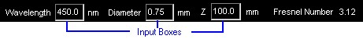

Diffraction - Fresnel Circular Aperture and Obstacle: Directions
Under normal operation, your WebTOP window should look like the following:

The WebTOP window has four parts. The top portion provides help on the operation of
WebTOP's widgets. The second portion is the active WebTOP scene. The third portion is the
VRML viewer you are using to view WebTOP. The bottom
portion of the window contains the current parameter values. You may scroll down and read
the directions or select the appropriate link from the following items:
How To Change Parameters
When you start the module, you should see a figure similar to this:
|  |
| View of the Aperature mode of the Module. |
|  |
| View of the Obstacle mode of the Module. |
The parameters that you can change are the diameter of the
aperture or obstacle, the wavelength of the light and the position
of the observation screen. These parameters can be changed
manipulating the provided widgets or by using the input boxes
at the "WebTOP Parameters" part of the screen.
The module includes two types of
widgets: a double-cone and a wheel. The widgets are shown in the following Figures:
|  |
 |
| Double-Cone Widget |
Wheel Widget |
To change a parameter, you need to position your cursor over the proper
widget. Labels on the module figure, shown above, identify each of the widgets. Once you have placed the cursor over the widget, the cursor changes into the Select Control mode. Once you click on the left mouse button, instructions about the use of
that particular widget appear at the WebTOP Console help component.
Changing A Parameter With the Double-Cone Widget:
Once you select the widget, drag the cursor in the direction that will produce
the desired change. You will notice that while the change is occurring, the widget becomes
highlighted and the image in the observation screen becomes blurry. Once you release the
mouse button, a sharp image reflecting the new value of the parameter will appear on the
observation screen.
Changing A Parameter With the Wheel Widget:
Once you select the wheel, drag and rotate the cursor to the left if you want to decrease
the wavelength or the right if you want to increase it. You will notice that while the
change is occurring, the wheel spins and the image in the observation screen becomes
blurry. Once you release the mouse button, a sharp image reflecting the new value of the
parameter will appear on the observation screen. You may need to repeat dragging in
the same direction until you obtain the desired wavelength.
Changing Parameter With the Input Boxes:
You may change the parameters by typing the values in the "Input
Boxes". These are shown in the following figure:
 |
Direct Input of Parameters |
|